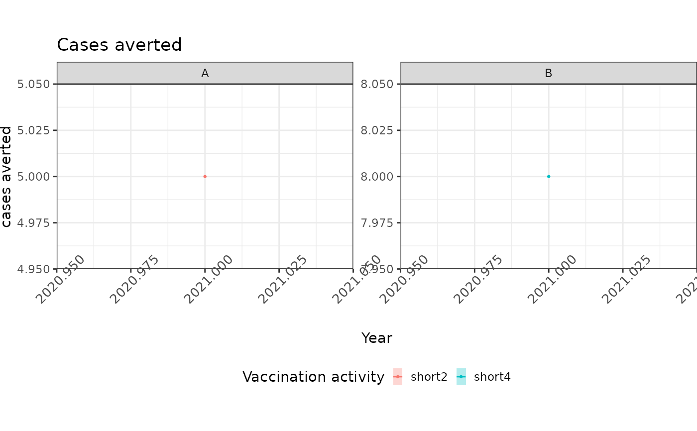

Produces faceted plots of central impact estimates for priority countries, stratified either by birth cohort or by year of vaccination. Impact metrics include cases, deaths, DALYs, and YLLs.
Arguments
- data
A tibble containing impact estimates.
- country
The country names as a character vector. Defaults to PINE countries.
- burden_type
Burden metric used to evaluate impact; may be one of:
"cases", "deaths", "dalys", "yll".- view
A string for the way impact is assigned, either by birth cohort ("cohort") or by year of vaccination ("year").
- title
Title of the plot to be rendered. Defaults to
NULL.
Examples
impact_data <- eg_impact_2
plot_impact(
data = impact_data,
"A",
burden_type = "cases",
title = "Cases averted",
view = "year"
)
#> `geom_line()`: Each group consists of only one observation.
#> ℹ Do you need to adjust the group aesthetic?
#> `geom_line()`: Each group consists of only one observation.
#> ℹ Do you need to adjust the group aesthetic?
